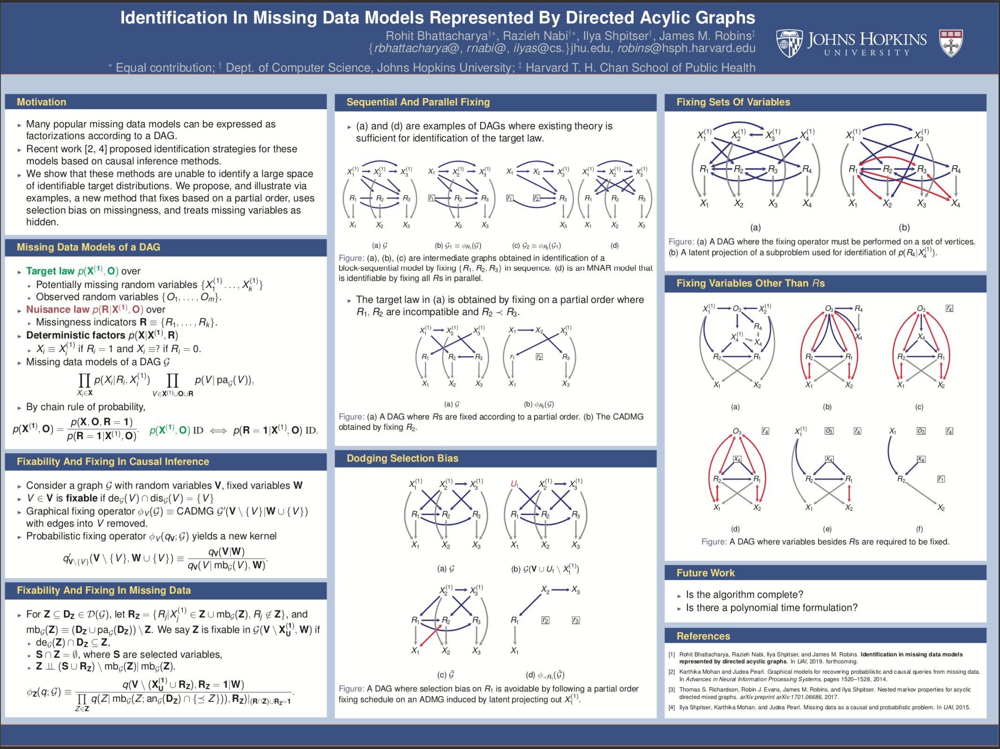
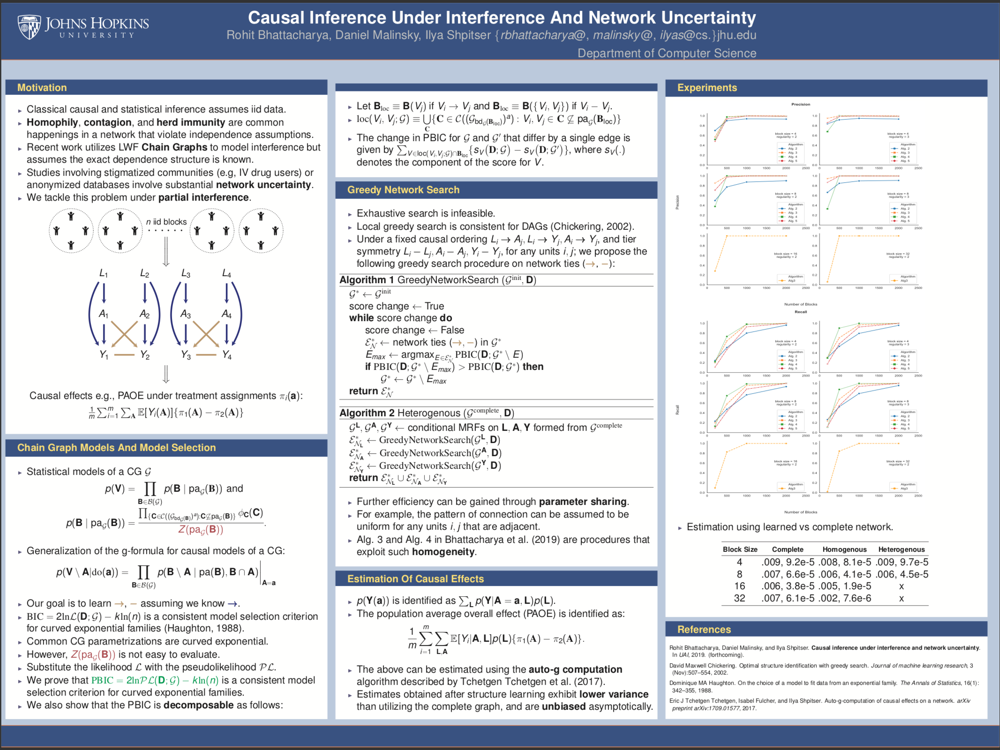

Mere data makes a man —
A and C and T and G.
The alphabet of you —
All from four symbols.
I am only two — 1 and 0.
I am currently pursuing a PhD in Causal Inference at Johns Hopkins University under the tutelage of Ilya Shpitser. If my love for the above quote didn't give it away already — my research interests lie at the intersection of artificial intelligence and computational biology :)
Our poster on Identification In Missing Data Models Represented By Directed Acyclic Graphs (below) won the Thomas R. Ten Have award at ACIC, Montréal. This means that Razieh and I will be giving a joint talk at ACIC next year in Austin, Texas.
 Presenting a poster on Identification In Missing Data Models Represented By Directed Acyclic Graphs at ACIC,
Montréal.
Joint work with Razieh Nabi, Ilya Shpitser, and James M. Robins.
 Presenting a poster on Causal Inference Under
Interference And Network Uncertainty at ACIC,
Montréal.
Joint work with Daniel Malinsky, and Ilya Shpitser.
Both of the works above have been accepted as papers to UAI 2019 :)